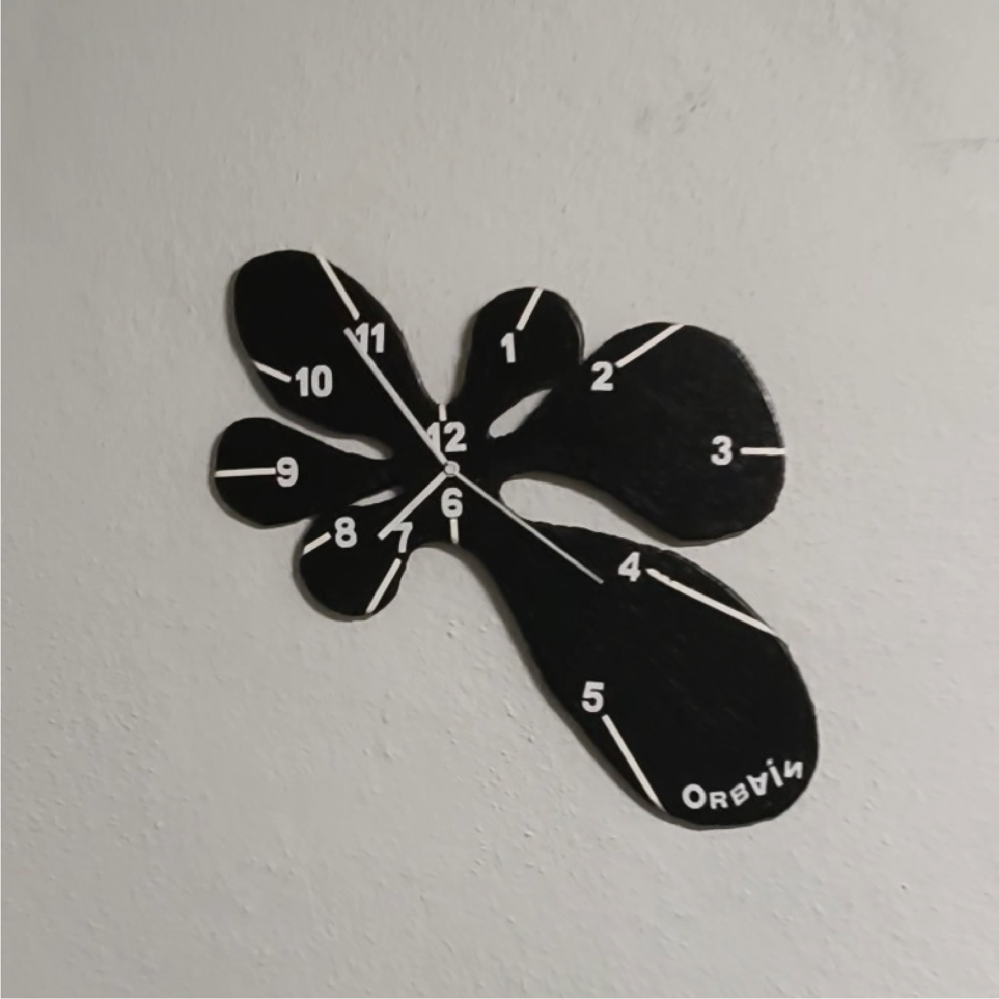
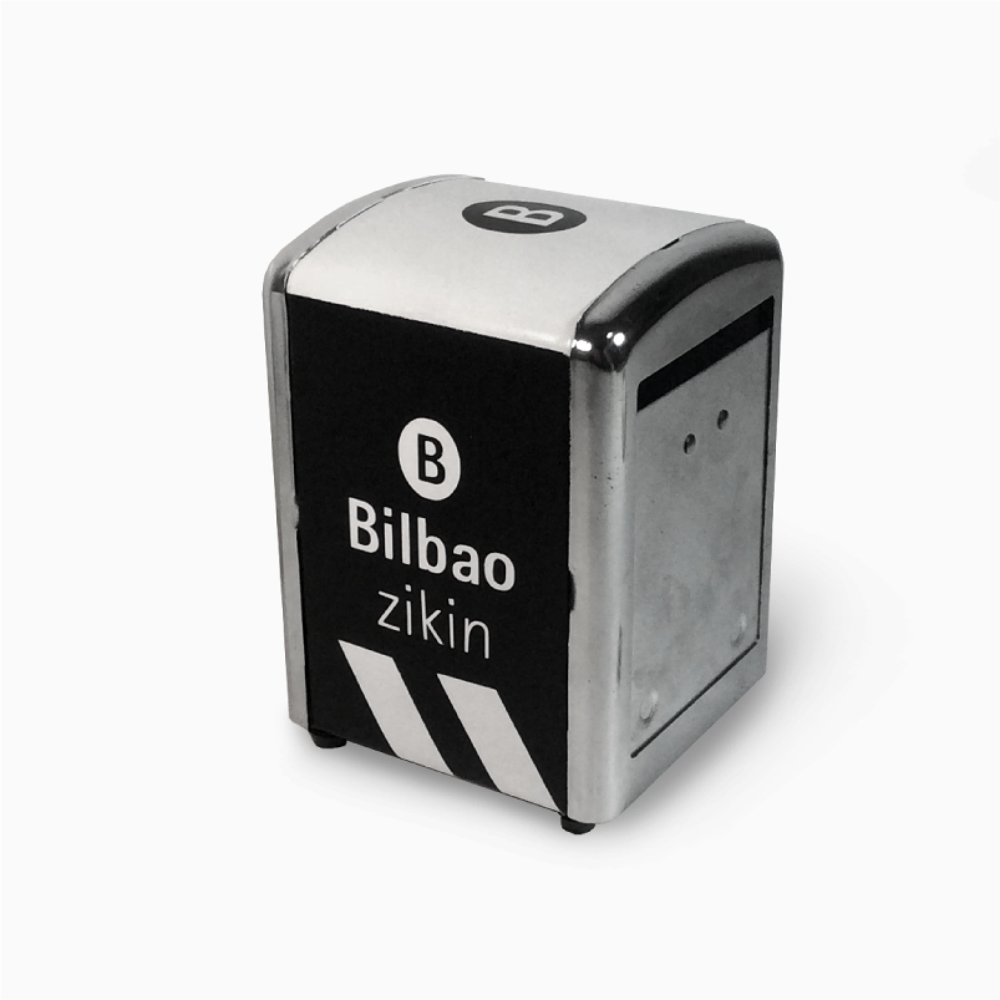
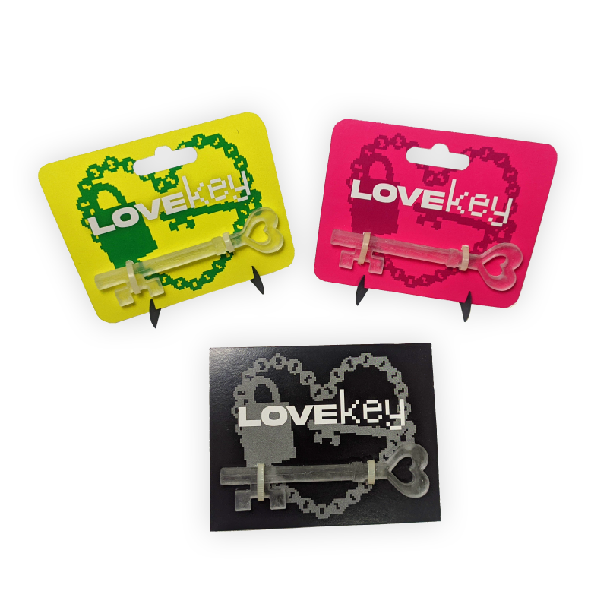

Proyectos
Aqui se reunen las piezas artísticas de la marca mas allá de la ropa.

Reloj
El reloj es el primer proyecto en madera de la marca.
Aunque las demas piezas pueden considerarse también mobiliario, está fue planeada 100% como objeto decorativo. Proceso de creación en video aqui.

Servilletero Bilbao Zikin
Para acompañar al Drop de Bilbao Zikin, creé servilleteros sin servilletas, jugando con el logo de Bilbao Garbi, empresa encargada de la limpieza en Bilbao, transformandolo a “Zikin”, sucio en Euskera.

Llavero
Despues del éxito del pañuelo Lovechain, decidí hacer en físico parte del diseño. Estas piezas de resina se consiguen mediante un molde de silicona generado de una pieza matriz impresa en 3D.